Screenshot 0
Check whether the package name is available
We use pip index versions learnwithchampak. If no matching distribution is found, the name is probably free, though PyPI can still block reserved or conflicting names.
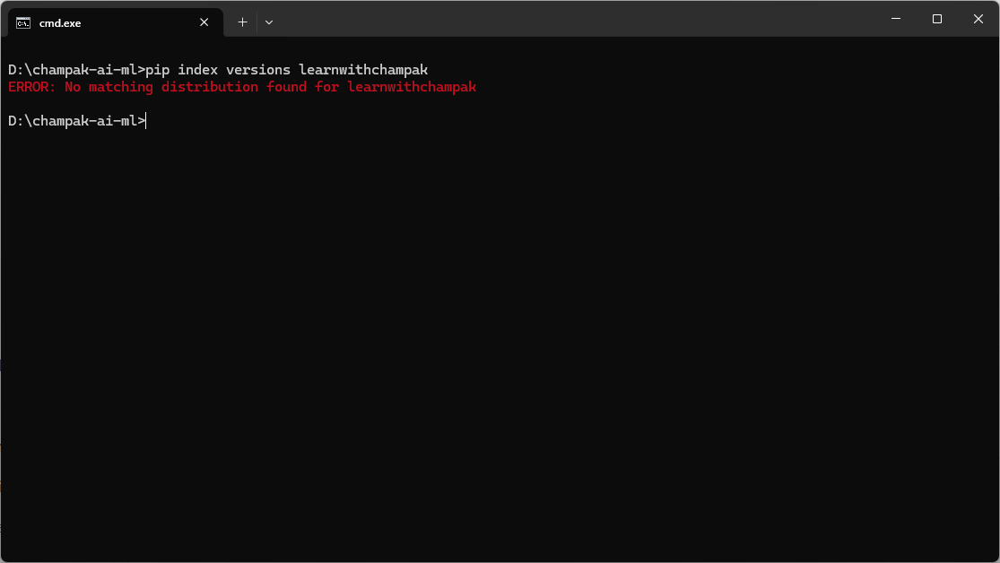
A complete practical lesson made from our real packaging journey: checking the name learnwithchampak, creating the project, building the wheel, uploading to TestPyPI, fixing token mistakes, and preparing for real PyPI.
pip install learnwithchampak
python
>>> from learnwithchampak import hello
>>> print(hello("Champak"))PyPI means Python Package Index. It is the public package library used by pip. TestPyPI is a separate practice server where you can safely test uploads before publishing the final package.
pip install learnwithchampak from real PyPI. During practice it installs from TestPyPI.In our example, the folder is D:\champak-ai-ml\learnwithchampak.
cd D:\champak-ai-ml
pip index versions learnwithchampak
md learnwithchampak
cd learnwithchampakIf pip index versions says no matching distribution was found, the name is probably free. For the first real release, PyPI may still apply extra name rules.
mkdir src
mkdir src\learnwithchampak
mkdir testslearnwithchampak/
├── pyproject.toml
├── README.md
├── LICENSE
├── src/
│ └── learnwithchampak/
│ ├── __init__.py
│ └── core.py
└── tests/
└── test_core.pyCreate the empty files:
type nul > pyproject.toml
type nul > README.md
type nul > LICENSE
type nul > src\learnwithchampak\__init__.py
type nul > src\learnwithchampak\core.py
type nul > tests est_core.py
code .def hello(name: str = "World") -> str:
return f"Hello, {name}! Welcome to Learn With Champak."from .core import hello
__version__ = "0.1.0"[build-system]
requires = ["setuptools>=69", "wheel"]
build-backend = "setuptools.build_meta"
[project]
name = "learnwithchampak"
version = "0.1.0"
description = "Python learning utilities by Champak Roy."
readme = "README.md"
requires-python = ">=3.8"
license = { text = "MIT" }
authors = [
{ name = "Champak Roy" }
]
keywords = ["python", "education", "learning", "programming"]
classifiers = [
"Development Status :: 3 - Alpha",
"Intended Audience :: Education",
"Programming Language :: Python :: 3",
"License :: OSI Approved :: MIT License",
"Operating System :: OS Independent"
]
[project.urls]
Homepage = "https://learnwithchampak.live"
Repository = "https://github.com/programmer-s-picnic/learnwithchampak"
[tool.setuptools.packages.find]
where = ["src"]python -m venv .venv
.venv\Scriptsctivate
pip install -e .
pythonfrom learnwithchampak import hello
print(hello("Champak"))Hello, Champak! Welcome to Learn With Champak.python -m pip install --upgrade build twine
python -m build
python -m twine check dist/*The build should create:
dist/learnwithchampak-0.1.0.tar.gz
dist/learnwithchampak-0.1.0-py3-none-any.whlTestPyPI and PyPI are separate. A real PyPI token will not work on TestPyPI.
python -m twine upload --repository-url https://test.pypi.org/legacy/ -u __token__ -p "PASTE_TESTPYPI_TOKEN" dist/*| Problem | Fix |
|---|---|
| Used real PyPI token on TestPyPI | Create token from test.pypi.org |
| Typed token as username | Username must be __token__ |
| Used project-scoped token before project exists | Use entire-account token for first upload |
| Copied only part of token | Copy full token beginning with pypi- |
pip uninstall learnwithchampak
pip install --index-url https://test.pypi.org/simple/ --extra-index-url https://pypi.org/simple learnwithchampakpython
>>> from learnwithchampak import hello
>>> print(hello("Champak"))After TestPyPI works, create a token on the real PyPI site and upload:
python -m twine upload --repository-url https://upload.pypi.org/legacy/ -u __token__ -p "PASTE_REAL_PYPI_TOKEN" dist/*pip install learnwithchampak.These screenshots show the real journey. Sensitive tokens and recovery code files were not included in the lesson package.
We use pip index versions learnwithchampak. If no matching distribution is found, the name is probably free, though PyPI can still block reserved or conflicting names.

The project name is learnwithchampak. On PyPI the install name and Python import name can be the same when the package name has no hyphen.
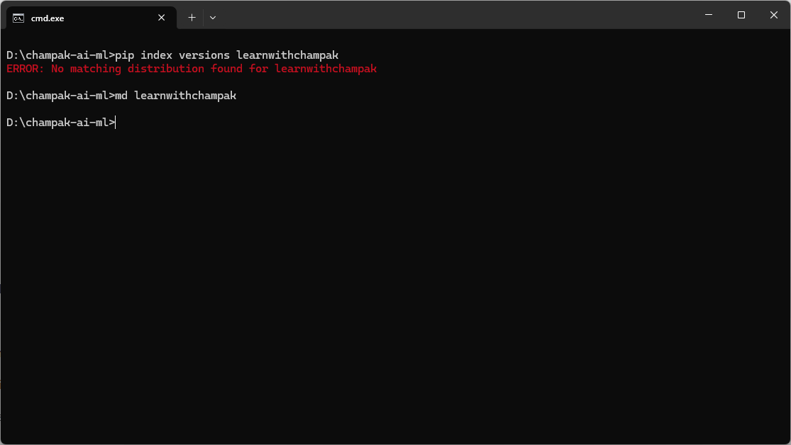
Work from inside the root folder so every file is created in the correct place.
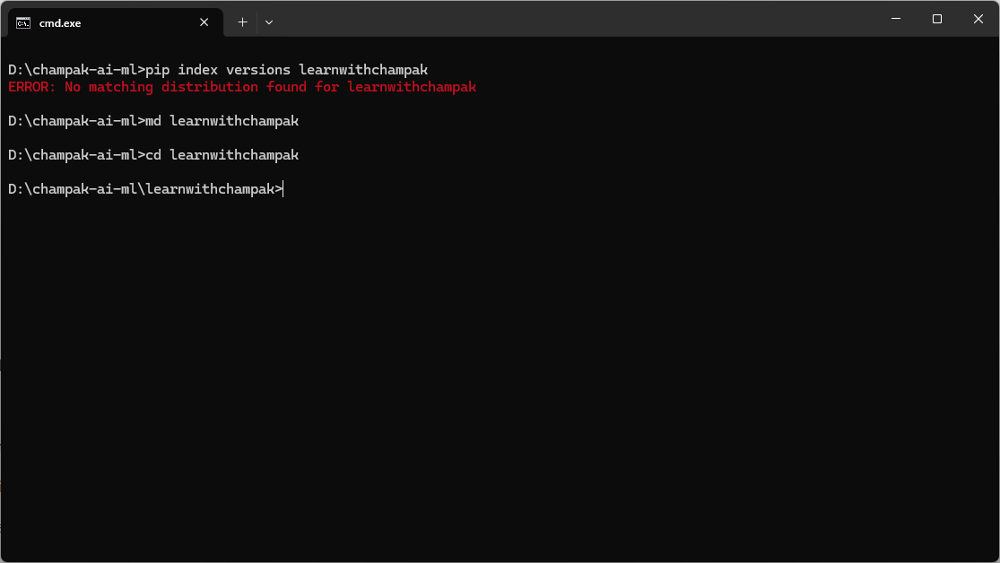
The src layout prevents accidental imports from the project root and is now a clean packaging habit.
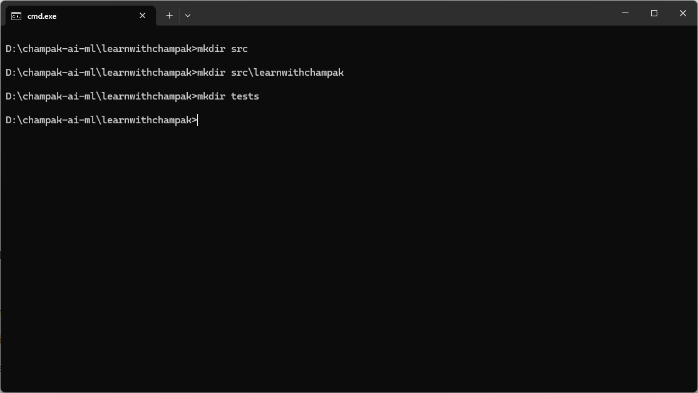
A visual check is useful for beginners: src and tests should exist beside pyproject.toml and README.md.
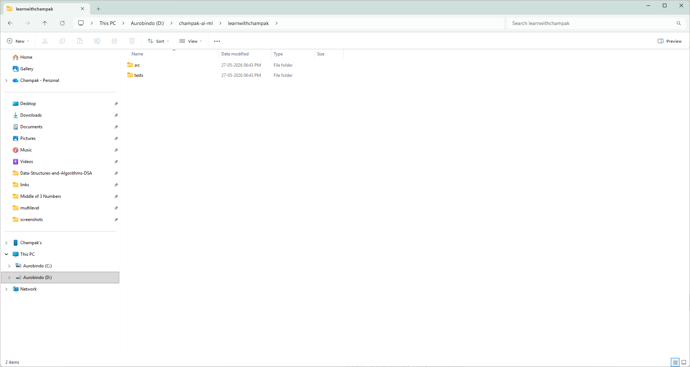
Inside src/learnwithchampak, create __init__.py and core.py. These make the actual importable package.
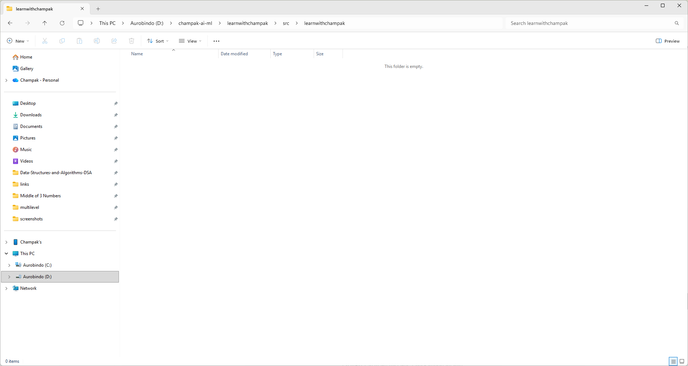
pyproject.toml, README.md, LICENSE and test files are created from the terminal.
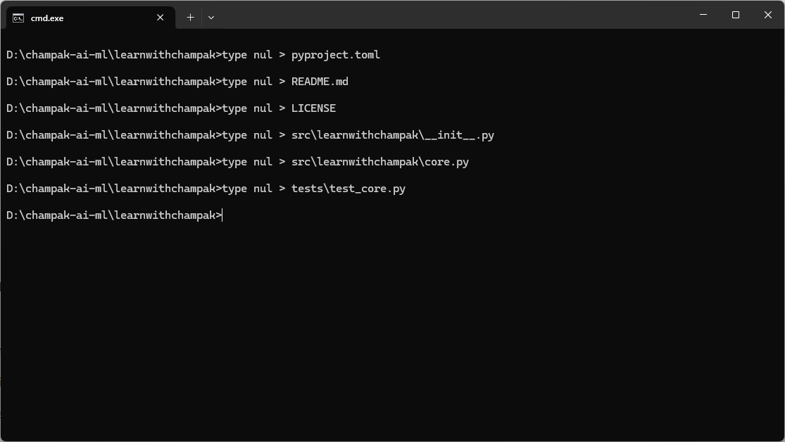
After files are created, the project is ready to open in Visual Studio Code or another editor.
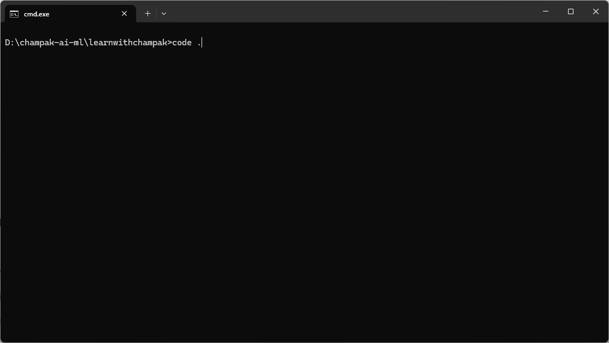
Use code . to edit the package files, README, and build configuration comfortably.
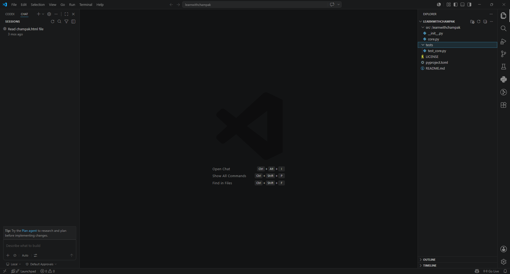
Build creates distribution files. Twine checks and uploads those files to TestPyPI or PyPI.
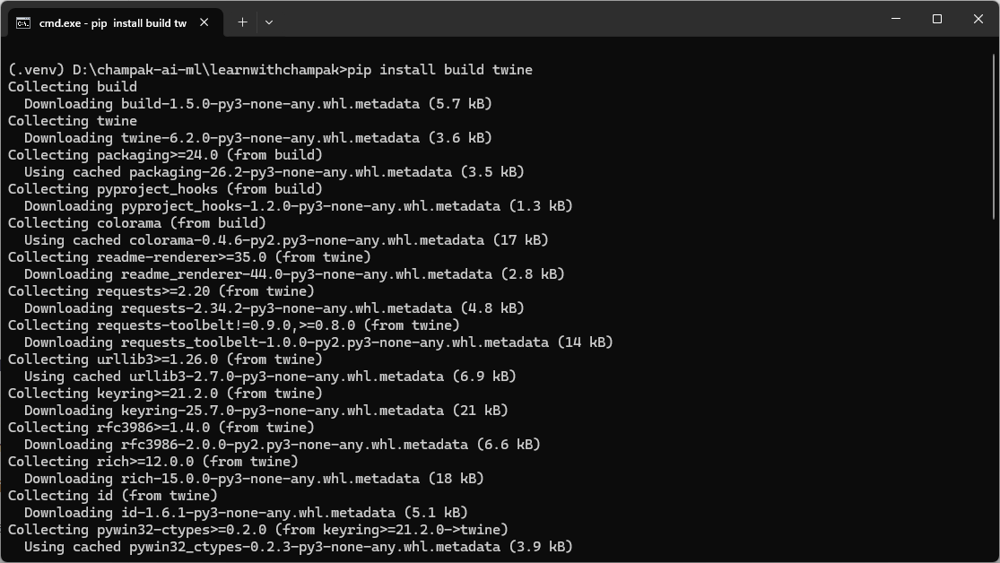
python -m build creates a source distribution and wheel inside the dist folder.
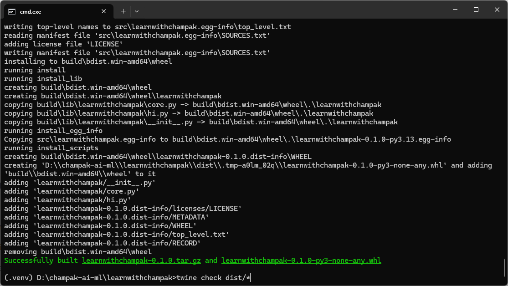
twine check dist/* verifies that the package metadata and README rendering are acceptable.
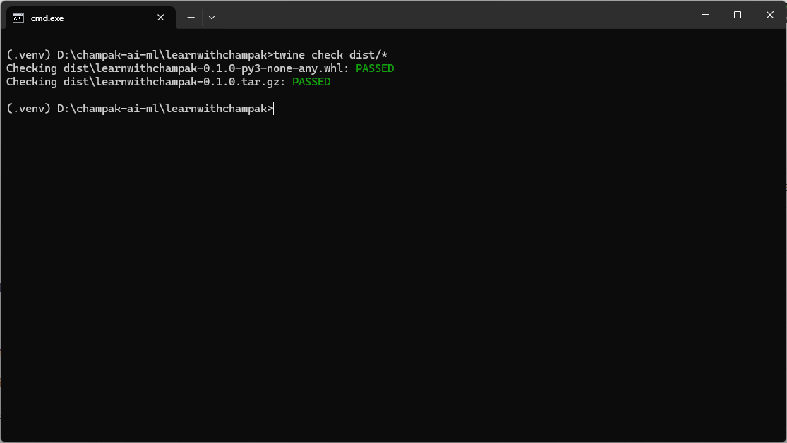
403 errors usually mean wrong token, real PyPI token used on TestPyPI, missing __token__ username, or project-scoped token before the project exists. The final upload in this screenshot succeeds. Token text has been redacted.
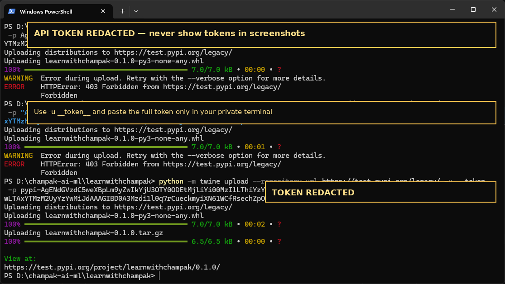
After successful upload, install from TestPyPI and test the function from a clean environment.
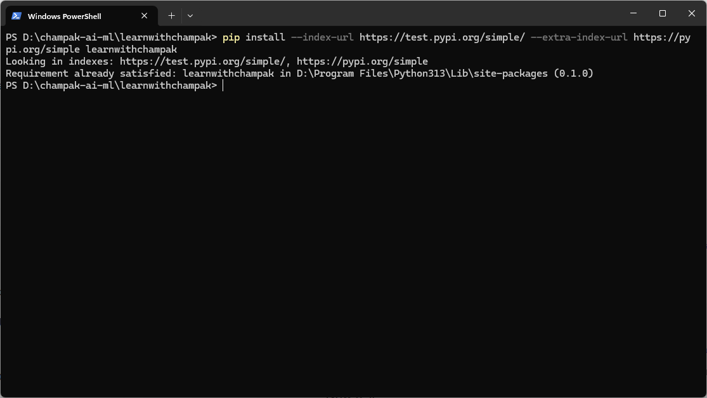
Every time you improve the module, increase the version number in pyproject.toml and __init__.py, delete old build files, rebuild, check, and upload.
rmdir /s /q dist build src\learnwithchampak.egg-info
python -m build
python -m twine check dist/*
python -m twine upload dist/*